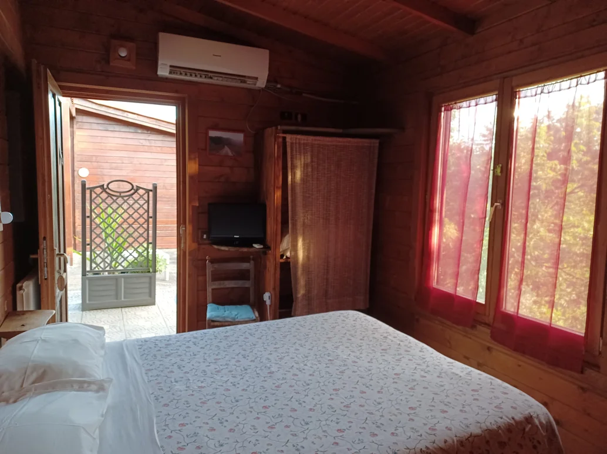
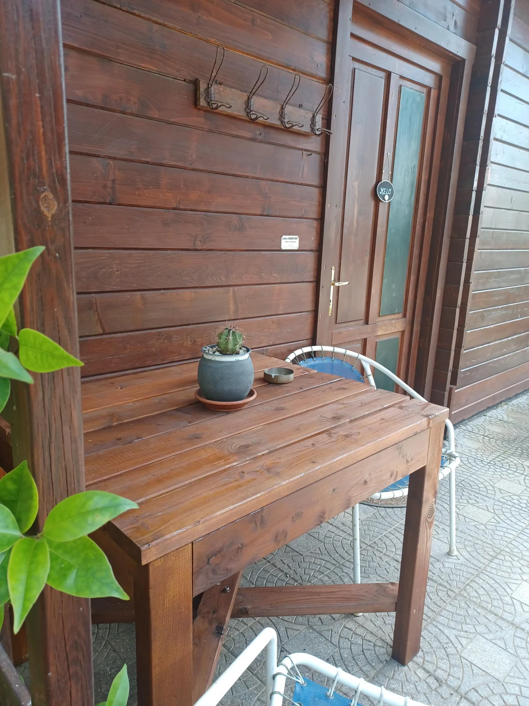
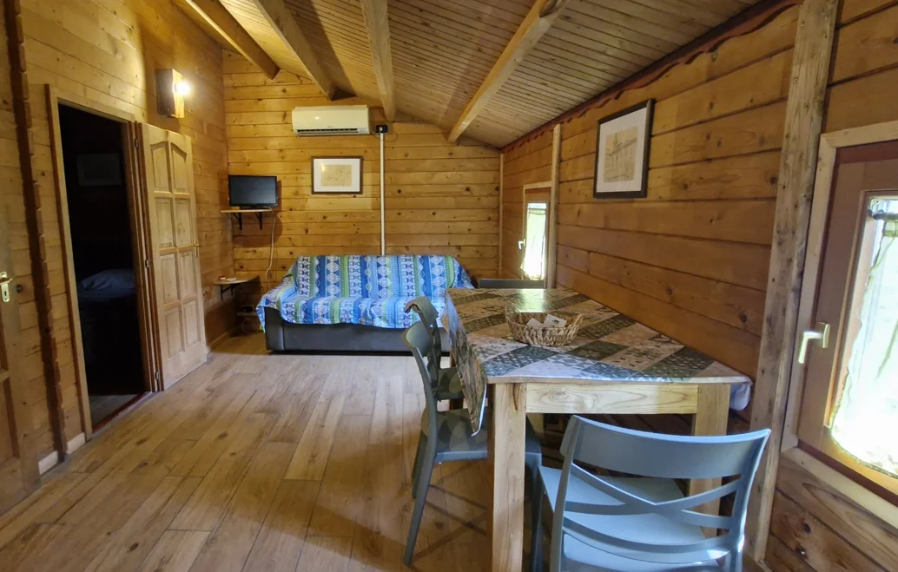
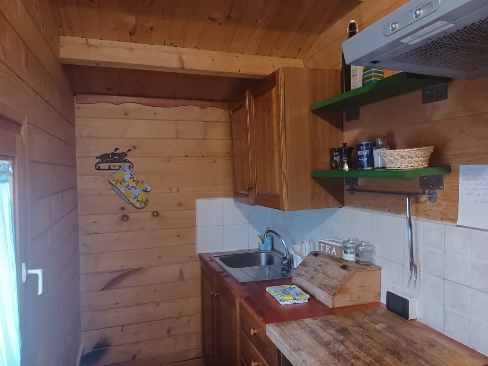
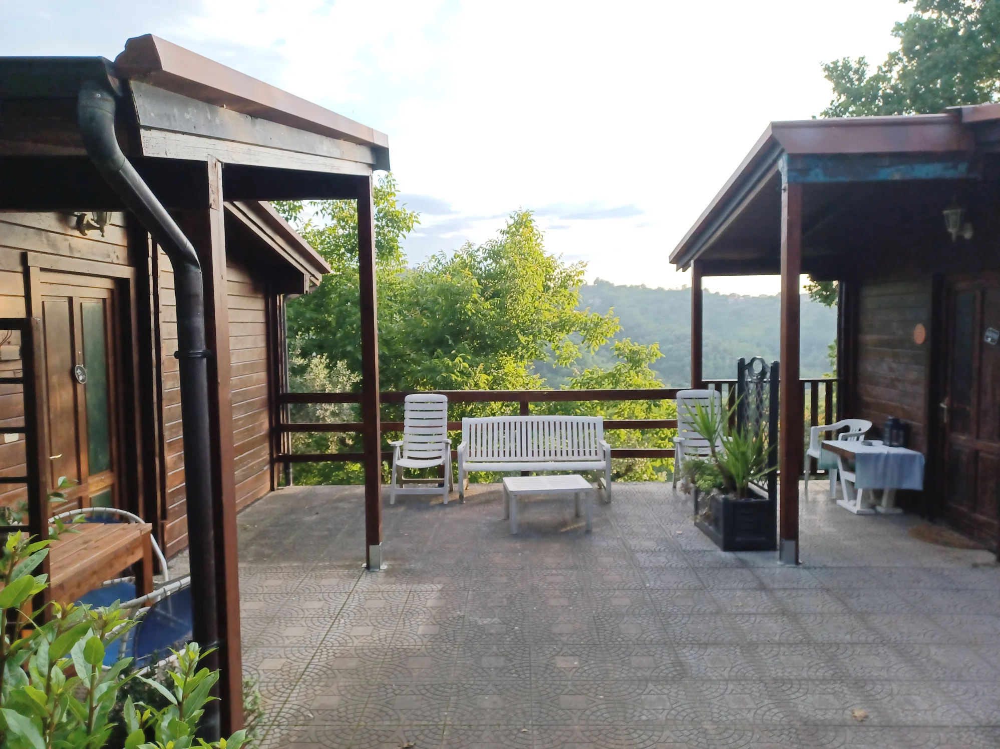
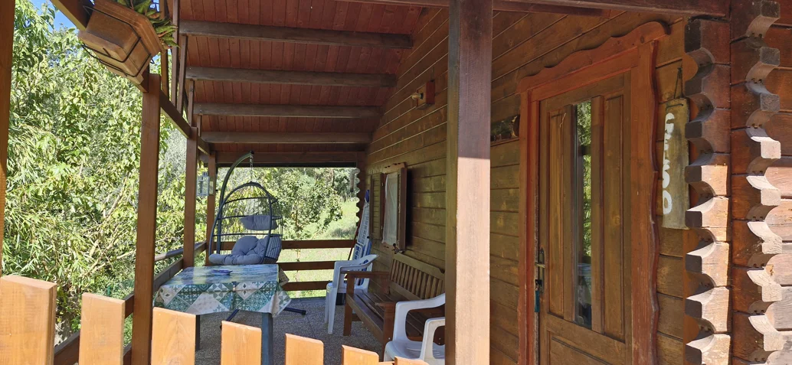
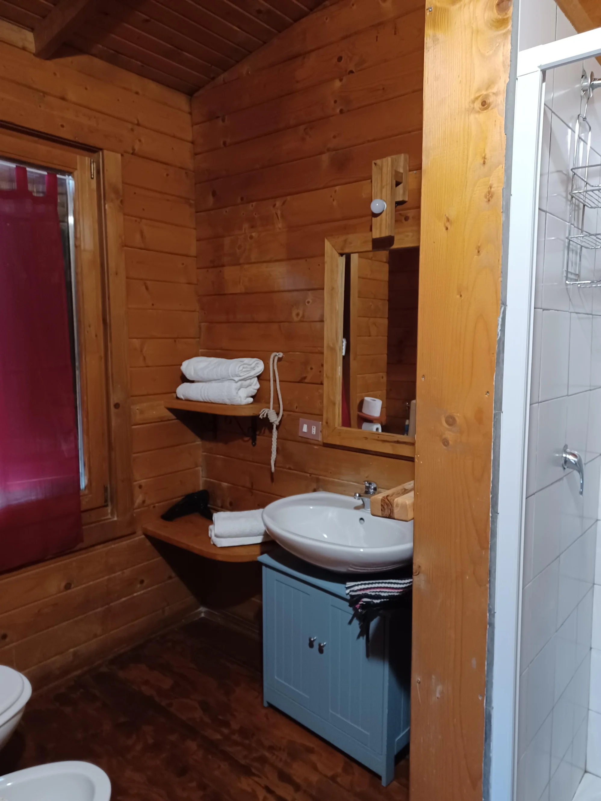
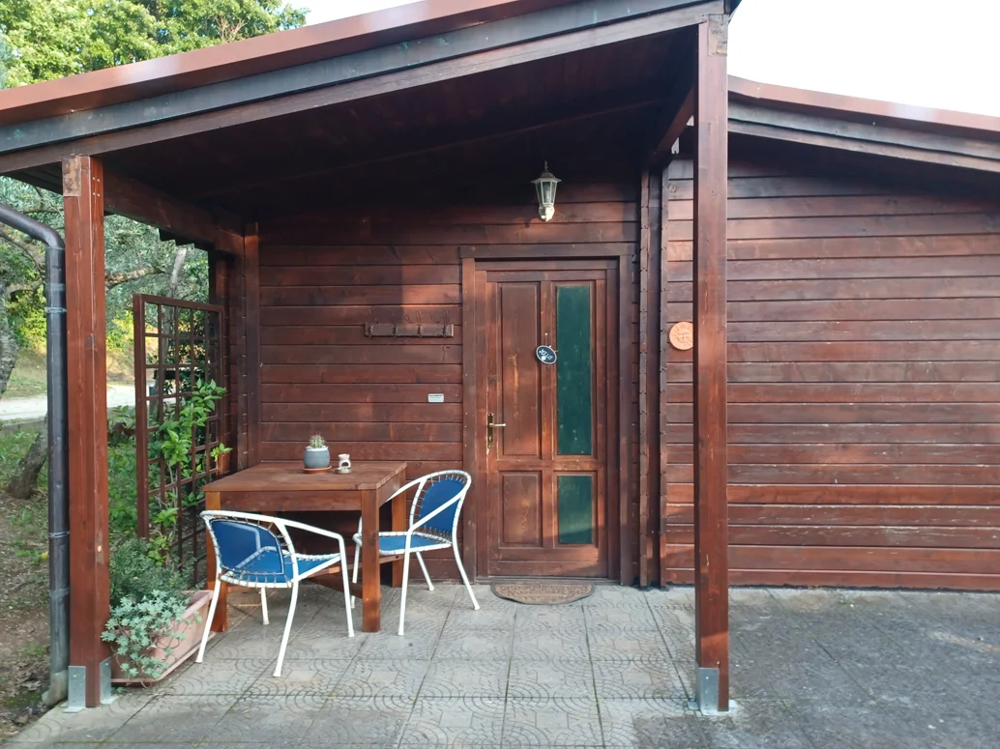

Camere e Bungalow








Camere matrimoniali
Le nostre camere sono immerse nella tranquillità della campagna e ideali per coppie o famiglie.
I bungalow più piccoli dispongono di camera matrimoniale, TV, aria condizionata, piccolo frigorifero e bagno privato con doccia e phon. Ogni camera ha una veranda esterna con vista.
Sono disponibili anche 2 camere familiari con lettino a castello o divano letto doppio, per ospitare famiglie da 4 o 5 persone. Culla su richiesta.
Prezzi con colazione:
Camera doppia: da 65 € a 90 €
Camera familiare: da 80 € a 130 €
Mezza pensione
È disponibile il servizio di mezza pensione con un costo da 55 € a 80 € a persona.
Colazione
La colazione viene servita dalle 8:00 alle 10:00 con dolci fatti in casa, cornetti appena sfornati, bruschette con marmellate e miele biologico, succhi di frutta, bevande calde e frutta fresca.
Orari
Check‑in dalle 14:00
Check‑out entro le 11:00
Riassetto camere a giorni alterni
Bungalow in legno con cucina
Sono disponibili 2 casette in legno di 36 mq, complete di camera da letto, angolo cottura, zona giorno con divano letto, bagno con doccia, riscaldamento e aria condizionata autonoma e 2 TV.
Prezzi:
da 80 € al giorno per 2 persone
settimanale da 450 € a 700 €
per 4 persone da 900 € a 1000 € a settimana in alta stagione